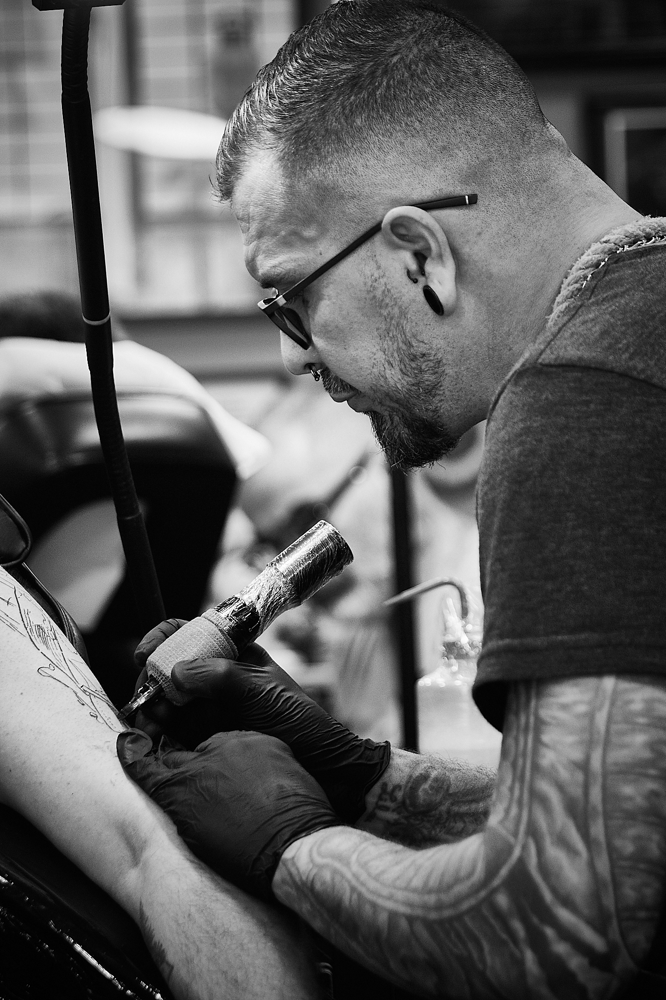

Stef Berdot
Des histoires pour la vie.
Bienvenue dans mon univers. Je crée des tatouages personnalisés, du réalisme au graphique, en explorant différents styles pour donner vie à chaque projet.

Réalisme
Des détails et des contrastes qui prennent vie.
Graphique
Des lignes, des formes et une identité singulière.
Projets personnalisés
Une création pensée autour de votre idée.
Styles variés
Un projet unique, construit ensemble.
Galerie
Chaque tatouage raconte quelque chose. Cette galerie est prête à accueillir tes propres réalisations.
Les cases ci-dessus sont des emplacements provisoires. Ajoute tes photos pour montrer tes véritables tatouages.
Stef Berdot Memoriam
Le tatouage est une rencontre entre une idée, une histoire et la peau qui la porte. Mon approche mêle réalisme, travail graphique et différents univers pour concevoir des projets personnels, réfléchis et adaptés à chaque personne.
Basé à Castelginest, au nord de Toulouse, je t'invite à me présenter ton idée afin que nous puissions imaginer ensemble un projet qui te ressemble.
Prendre contact
Pour une demande de rendez-vous, décris ton idée, la zone du corps envisagée, la taille approximative et ajoute quelques références si tu en as.
Castelginest
Nord de Toulouse, Haute-Garonne
Choisis le moyen de contact qui te convient.
Le bouton e-mail ouvrira ton application de messagerie. L'adresse e-mail professionnelle pourra être ajoutée dès que tu souhaites l'afficher.